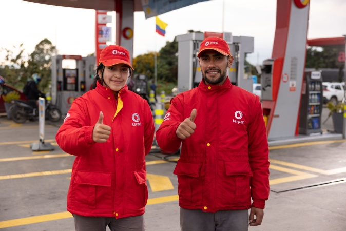

Bienvenidos a la pagina de servicios
Link de pagina de inicio

Servicios
Terpel es una empresa colombiana líder en la distribución de combustibles y productos derivados del petróleo y gas.
Fundada en 1968, cuenta con más de 2.000 estaciones de servicio en Colombia, alcanzando una participación de mercado del 40%.
Además, tiene presencia en Panamá y México.

Terpel es una empresa colombiana líder en la distribución de combustibles y soluciones energéticas.
Ofrece estaciones de servicio con combustibles líquidos, gas natural vehicular (GNV), tiendas de conveniencia y
servicios de lubricación. También comercializa lubricantes para vehículos e industrias, suministra combustibles para
aviación y marina, y brinda soluciones energéticas a empresas. Además, promueve el uso de GNV como una alternativa más
económica y ecológica.